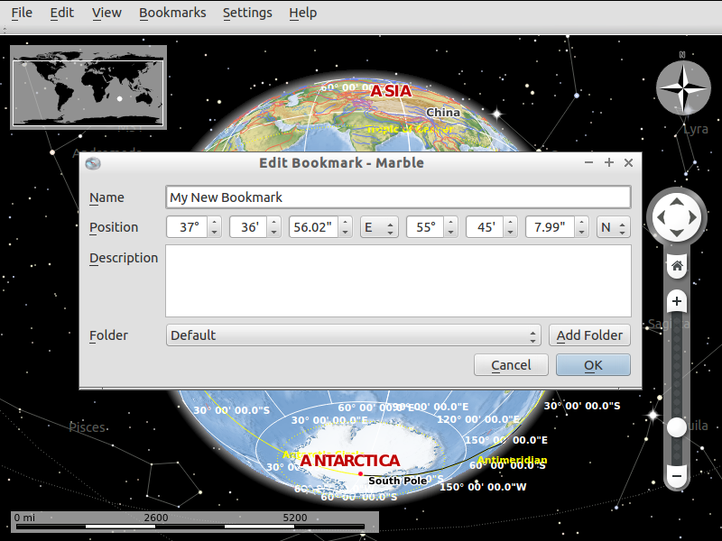

Marble gyorstalpaló¶
Marble egy nyílt forráskódú KDE oktatási projekt program, hasonló a NASA World Wind-hez vagy Google Földhöz. Tetszőleges számú térképet jeleníthet meg a földgömbön (többek között az OpenStreetMaps-et), arra bátorítjuk, hogy építse be az alkalmazásába a KDE Marble vezérlőt.
Contents
A megjelenítés megváltoztatása¶
- Az egérgörgő forgatásával nagyíthatja a földgömböt.
- A mozgatáshoz nyomja le az egér bal gombját és mozgassa.
A Marble-nak 11 különböző nézete (témája) van:
- Atlasz
- OpenStreetMap
- Műhold nézet
- A Föld éjjel
- Történelmi térkép 1689
- Hold
- Sík térkép
- Csapadék (december)
- Csapadék (július)
- Hőmérséklet (december)
- Hőmérséklet (július).
A témák közötti váltáshoz kattintson az egyik elemre a „Theme” listában a „Map View” fülön.

Kattintson egy címkére bárhol, hogy további információt kapjon arról.

Hely keresés¶
Egy hely megtalálásához írja be a nevét a „Search” panel tetején a kereső sorba. Ahogy gépel javaslatok jelennek meg a kereső sor alatt valahogy így:

Könyvjelző hozzáadása¶
A Marbel-ben használja a könyvjelzőket valami helyének a megjegyzésére.
Egy könyvjelző hozzáadásához nyomja meg a bal egérgombot és kattintson az „Add bookmark”-ra. Ezután egy ilyen ablak jelenik meg:
Írja be a könyvjelző nevét, leírását és a cél mappát
Kattintson az „Ok” gombra. Azután a könyvjelző megjelenik:
A könyvjelzők kezeléséhez menjen a „Bookmarks->Manage Bookmarks” menüponthoz.

{kind=link}
{kind=link}
Kipróbálandó dolgok¶
Próbálja ki az útvonalkeresés funkciót. További segítségért lásd a Marble dokumentációt.
Mi a következő?¶
Nézze meg a Marble honlapot további információkért.